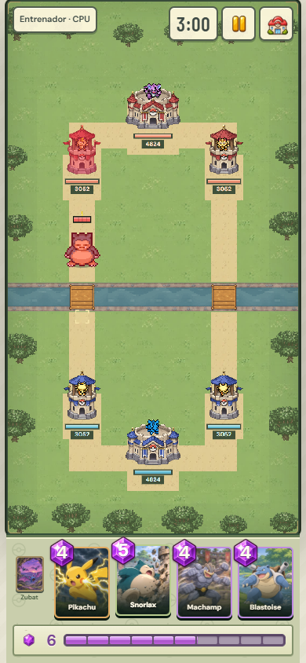
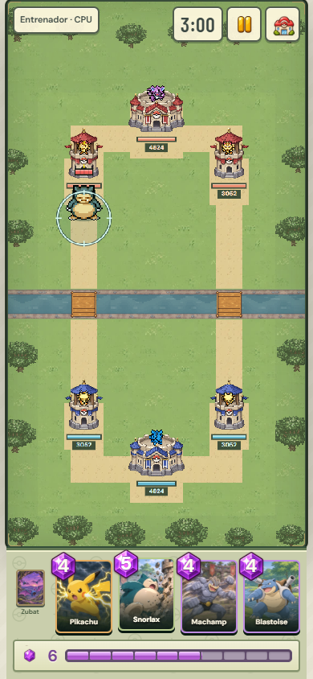
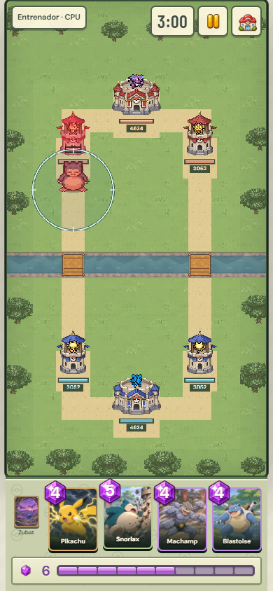
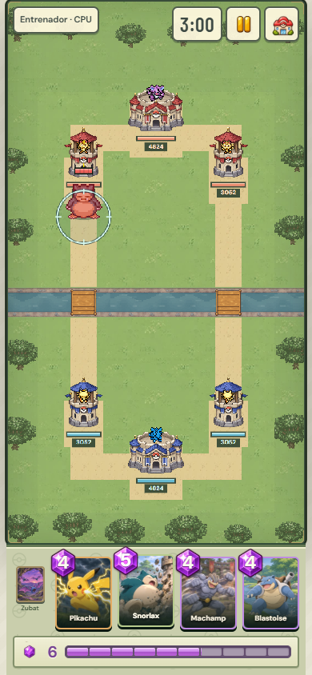
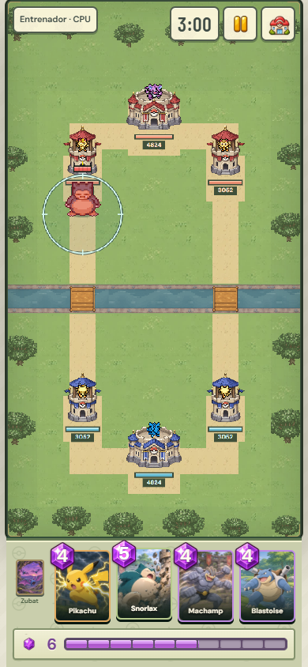
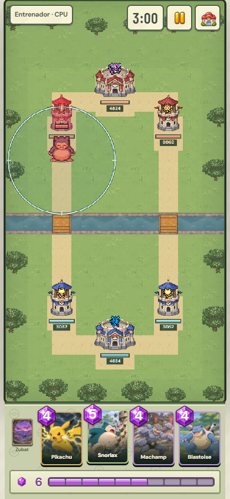
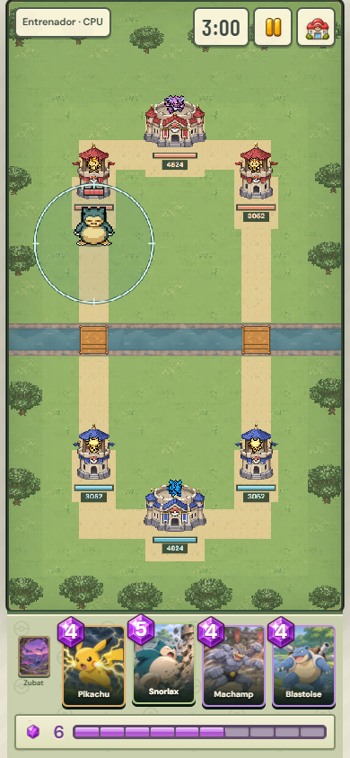
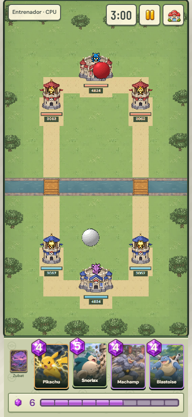
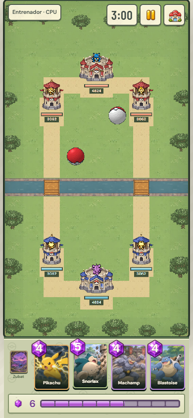
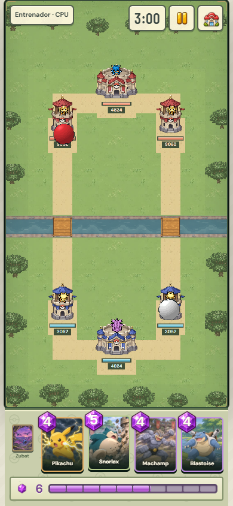

1319/1319 comprobaciones medidas pasan. Fuente inmutable 6dfb7c3b05a9e0a7bfb37e717d471bf3bfeefb4a; la X de coordenadas inválidas tiene un seguimiento posterior separado.
Método, fuentes y límites · Resumen · Trazas y hashes
SVG HTTP200, textura presente y 0 diferencias contra el recurso. Posición mundo y edad visual coinciden exactamente con la traza anterior. Estos frames son locales y no verifican publicación.



Los enlaces de cada imagen muestran el impacto o campo activo con sus FX conservados y sin rango táctico. Se verificaron ambas perspectivas y tres tamaños.






